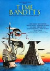
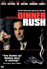
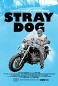
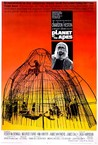
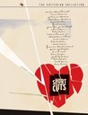
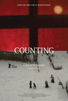
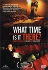
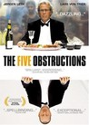
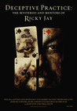

Movie Releases By Score

|
1201.
Which Way Is the Front Line from Here? The Life and Time of Tim Hetherington
Release Date:
April 12, 2013
A look a the life of photo-journalist and filmmaker Tim Hetherington who covered wars in Afghanistan, Liberia and Libya.
|
1202.
Frost/Nixon
Release Date:
December 5, 2008

For three years after being forced from office, Nixon remained silent. But in summer 1977, the steely, cunning former commander-in-chief agreed to sit for one all-inclusive interview to confront the questions of his time in office and the Watergate scandal that ended his presidency. Nixon surprised everyone in selecting Frost as his televised confessor, intending to easily outfox the breezy British showman and secure a place in the hearts and minds of Americans. Likewise, Frost's team harbored doubts about their boss' ability to hold his own. But as cameras rolled, a charged battle of wits resulted. Would Nixon evade questions of his role in one of the nation's greatest disgraces? Or would Frost confound critics and bravely demand accountability from the man who'd built a career out of stonewalling? Over the course of their encounter, each man would reveal his own insecurities, ego and reserves of dignity--ultimately setting aside posturing in a stunning display of unvarnished truth. [Universal Pictures]
|
|

|
1203.
Siddhartha (re-release)
Release Date:
September 27, 2002
A re-release of the 1972 adaptation of Herman Hesse's novel about a young Brahmin seeking a more meaningful way of life.
|
1204.
Minority Report
Release Date:
June 21, 2002

Based on a story by famed science fiction writer Philip K. Dick, Minority Report is and action-detective thriller set in Washington, D.C. in 2054, where police utilize a psychic technology to arrest and convict murderers before they commit their crime. (Fox/Dreamworks)
|
|

|
1205.
Last Resort
Release Date:
February 23, 2001
Abandoned by her fiance at the airport, a young Russian woman, with child in tow, applies for asylum in England. With her dreams of a better life dampened by the faded seaside resort she must live in during the processing, an unusual friendship develops that gives her hope. A lyrical, beautifully poetic story that earns its deep emotion, Last Resort is a triumph for director Paul Pawlikowski. (Shooting Gallery)
|
1206.
MASH
Release Date:
January 25, 1970

Though highly skilled and deeply dedicated, three Korean War Army surgeons adopt a hilarious, lunatic lifestyle as an antidote to the tragedies of their Mobile Army Surgical Hospital, and in the process infuriate Army bureaucrats. [Twentieth Century Fox]
|
|
1207.
Senna
Release Date:
August 12, 2011
Senna's remarkable story, charting his physical and spiritual achievements on the track and off, his quest for perfection, and the mythical status he has since attained, is the subject of SENNA, a documentary feature that spans the racing legend's years as an F1 driver, from his opening season in 1984 to his final, tragic race a decade later. Far more than a film for F1 fans, SENNA unfolds a remarkable story in a remarkable manner, eschewing many standard documentary techniques in favour of a more cinematic approach that makes full use of astounding footage, much of which is drawn from F1 archives and is previously unseen. (Working Title Films)
|
|
1208.
Reservoir Dogs
Release Date:
October 1, 1992
Quentin Tarantino's debut cult classic chronicles a jewelry heist gone wrong. (Miramax Films)
|
|
|  |
1209.
Time Bandits
Release Date:
November 6, 1981
A young boy accidentally joins a band of time traveling dwarves as they jump from era to era looking for treasure to steal.
|

|
1210.
Beyond the Hills
Release Date:
March 8, 2013
Alina (Cristina Flutur) arrives at a remote monastery to visit her friend Voichita (Cosmina Stratan), one of the nuns in training. Alina wants Voichita to leave her cloistered life and return with her to Germany, but as the fateful hour draws near, Voichita does not want to go, so Alina decides to stay, which is when the real trouble begins. [IFC Films]
|

|
1211.
Glen Campbell: I'll Be Me
Release Date:
October 24, 2014
In 2011, music legend Glen Campbell set out on an unprecedented tour across America. They thought it would last 5 weeks instead it went for 151 spectacular sold out shows over a triumphant year and a half across America. What made this tour extraordinary was that Glen had recently been diagnosed with Alzheimer’s disease. He was told to hang up his guitar and prepare for the inevitable. Instead, Glen and his wife went public with his diagnosis and announced that he and his family would set out on a “Goodbye Tour.”
|
1212.
The Sessions
Release Date:
October 19, 2012
The Sessions tells the story of a man confined to an iron lung who is determined at age 38 to lose his virginity. With the help of his therapists and the guidance of his priest, he sets out to make his dream a reality. (Fox Searchlight)
|
|

|
1213.
March of the Penguins
Release Date:
June 24, 2005

This documentary chronicles one year in the life of an emperor penguin flock.
|
1214.
Winter on Fire: Ukraine's Fight for Freedom
Release Date:
October 9, 2015
A documentary on the unrest in Ukraine during 2013 and 2014, as student demonstrations supporting European integration grew into a violent revolution calling for the resignation of President Viktor F. Yanukovich.
|
|

|
1215.
Jonestown: The Life and Death of Peoples Temple
Release Date:
October 20, 2006
This documentary tells the story of the people who followed Jim Jones from Indiana, to California, and finally to the remote jungles of Guyana, South America, in a misbegotten quest to build an ideal society. (Seventh Art Releasing)
|
1216.
Oasis
Release Date:
May 7, 2004
A hardened ex-con falls for a severely disabled woman in this psychological drama.
|
|
|  |
1217.
Dinner Rush
Release Date:
September 28, 2001
Set on one lively night at a trendy restaurant in the TriBeCa area of New York City, this is a rapid-fire tale of gangsters, gourmet food, high-flying chefs, bookies and obnoxious patrons made real with snappy dialogue and an experienced ensemble cast. (Access Motion Picture Group)
|

|
1218.
Spring Forward
Release Date:
December 1, 2000
Upon release from prison, a young man (Schreiber) begins working for a small town's park departmant. He forms a friendship with a co-worker, an older man (Beatty).
|
1219.
Two Family House
Release Date:
October 6, 2000
The captivating and emotionally-charged story of a lovable loser in pursuit of his dream on Staten Island. (Lions Gate Films)
|
|

|
1220.
City of God
Release Date:
January 17, 2003
Welcome to the world's most notorious slum: Rio de Janeiro's 'City of God.' A place where combat photographers fear to tread, where Police rarely go, and residents are lucky if they live to the age of 20. This is the true story of a young man who grew up on these streets and whose ambition as a photographer is our window in and ultimately may be him only way out. [Miramax]
|
1221.
Pariah
Release Date:
December 28, 2011
Adepero Oduye, who had earlier starred in the short film, portrays Alike (pronounced ah-lee-kay), a 17-year-old African-American woman who lives with her parents Audrey and Arthur and younger sister Sharonda in Brooklyn’s Fort Greene neighborhood. She has a flair for poetry, and is a good student at her local high school.
Alike is quietly but firmly embracing her identity as a lesbian. With the sometimes boisterous support of her best friend, out lesbian Laura, Alike is especially eager to find a girlfriend. At home, her parents’ marriage is strained and there is further tension in the household whenever Alike’s development becomes a topic of discussion. Pressed by her mother into making the acquaintance of a colleague’s daughter, Bina, Alike finds Bina to be unexpectedly refreshing to socialize with. Wondering how much she can confide in her family, Alike strives to get through adolescence with grace, humor, and tenacity – sometimes succeeding, sometimes not, but always moving forward. (Focus Features)
|
|

|
1222.
Red Rock West
Release Date:
April 8, 1994
Upon arriving to a small town, a drifter is mistaken for a hitman, but when the real hitman arrives, complications ensue.
|
1223.
The Meyerowitz Stories (New and Selected)
Release Date:
October 13, 2017
The Meyerowitz Stories (New and Selected) is the emotional and comic intergenerational tale of adult siblings (Adam Sandler, Ben Stiller, and Elizabeth Marvel) contending with the long shadow their strong-willed father (Dustin Hoffman) has cast over their lives. [Netflix]
|
|
|  |
1224.
Stray Dog
Release Date:
July 3, 2015
A contemplative portrait of Ron 'Stray Dog' Hall: biker, Vietnam Vet, and lover of small dogs.
|
1225.
She's Gotta Have It
Release Date:
August 8, 1986
The story of Nola Darling's simultaneous sexual relationships with three different men is told by her and by her partners and other friends. All three men wanted her to commit solely to them; Nola resists being "owned" by a single partner.
|
|
1226.
Pride
Release Date:
September 26, 2014
It’s the summer of 1984. Margaret Thatcher is in power and the National Union of Mineworkers is on strike, prompting a London-based group of gay and lesbian activists to raise money to support the strikers’ families. Initially rebuffed by the Union, the group identifies a tiny mining village in Wales and sets off to make their donation in person. As the strike drags on, the two groups discover that standing together makes for the strongest union of all. [CBS Films]
|
|

|
1227.
Precious: Based on the Novel 'Push' by Sapphire
Release Date:
November 6, 2009
Set in Harlem in 1987, it is the story of Claireece “Precious” Jones, a sixteen-year-old African-American girl born into a life no one would want. She’s pregnant for the second time by her absent father; at home, she must wait hand and foot on her mother, a poisonously angry woman who abuses her emotionally and physically. School is a place of chaos, and Precious has reached the ninth grade with good marks and an awful secret: she can neither read nor write. Precious may sometimes be down, but she is never out. Beneath her impassive expression is a watchful, curious young woman with an inchoate but unshakeable sense that other possibilities exist for her. Threatened with expulsion, Precious is offered the chance to transfer to an alternative school, Each One/Teach One. Precious doesn’t know the meaning of “alternative,” but her instincts tell her this is the chance she has been waiting for. Precious begins a journey that will lead her from darkness, pain and powerlessness to light, love and self-determination. (Lionsgate)
|
1228.
Hotel Rwanda
Release Date:
December 22, 2004
Based on true events from the civil war in Rwanda, this film profiles Paul Rusesabagina (Don Cheadle), the manager of a luxury hotel who opened his establishment to Tutsi refugees despite the danger to himself and his family.
|
|
1229.
Your Name.
Release Date:
April 7, 2017
The day the stars fell, two lives changed forever. High schoolers Mitsuha and Taki are complete strangers living separate lives. But one night, they suddenly switch places. Mitsuha wakes up in Taki’s body, and he in hers. This bizarre occurrence continues to happen randomly, and the two must adjust their lives around each other. Yet, somehow, it works. They build a connection and communicate by leaving notes, messages, and more importantly, an imprint. When a dazzling comet lights up the night’s sky, it dawns on them. They want something more from this connection—a chance to meet, an opportunity to truly know each other. Tugging at the string of fate, they try to find a way to each other. But distance isn’t the only thing keeping them apart. Is their bond strong enough to face the cruel irony of time? Or is their meeting nothing more than a wish upon the stars? [FUNimation]
|
|
1230.
Photographic Memory
Release Date:
October 12, 2012
Filmmaker Ross McElwee finds himself in frequent conflict with his son, a young adult who seems addicted to and distracted by the virtual worlds of the internet. To understand his fractured love for his son, McElwee travels back to St. Quay-Portrieux in Brittany for the first time in decades to retrace his own journey into adulthood. A meditation on the passing of time, the praxis of photography and film, and the digital versus analog divide. (First Run Features)
|
|
1231.
Cyrano de Bergerac
Release Date:
December 1, 1990
Embarrassed by his large nose, a romantic poet/soldier romances his cousin by proxy.
|
|
|  |
1232.
Planet of the Apes
Release Date:
April 3, 1968
An astronaut crew crash-lands on a planet in the distant future where intelligent talking apes are the dominant species, and humans are the oppressed and enslaved.
|
1233.
Joan Rivers: A Piece of Work
Release Date:
June 11, 2010
Joan Rivers: A Piece of Work takes the audience on a year long ride with legendary comedian Joan Rivers in her 76th year of life. Peeling away the mask of an iconic comedian and exposing the struggles, sacrifices and joy of living life as a ground breaking female performer. The film is an emotionally surprising and revealing portrait of one the most hilarious and long-standing career women ever in the business. (IFC Films)
|
|

|
1234.
Baran
Release Date:
December 7, 2001
Baran is the story of Afghan refugees told through the eyes of an Iranian teenage boy named Lateef. His devotion to a person he barely knows leads him to the choice that will change his life forever. (Miramax Films)
|

|
1235.
Chunhyangdyun
Release Date:
December 29, 2000
Set in 18th century Korea, this story of young lovers from different social castes is based on a Korean folk tale.
|

|
1236.
High Fidelity
Release Date:
March 31, 2000
In this biting romantic comedy, Rob Gordon (Cusack) is the owner of a semi-failing record store in Chicago, where he sells music the old-fashioned way -- on vinyl. His needle, however, skips the love groove when his long-time girlfriend, Laura (Hjejle), walks out on him. As he examines his failed attempts at romance and happiness, the process finds him being dragged, kicking and screaming, into adulthood. (Touchstone Pictures)
|
|  |
1237.
Short Cuts
Release Date:
October 3, 1993
Using the short stories of Raymond Carver as inspiration, Robert Altman revisits the formula of his 1975 film "Nashville," portraying various interlocking stories set against the backdrop of contemporary middle-class Los Angeles.
|
1238.
The Fly
Release Date:
August 15, 1986
A scientist (Goldblum) slowly becomes a human sized fly after his teleport device malfunctions.
|
|
1239.
The Black Panthers: Vanguard of the Revolution
Release Date:
September 2, 2015
This documentary tells the rise and fall of the Black Panther Party, one of the 20th century's most alluring and controversial organizations that captivated the world's attention for nearly 50 years.
|
|

|
1240.
Coriolanus
Release Date:
December 2, 2011
Caius Martius ‘Coriolanus', a revered and feared Roman General is at odds with the city of Rome and his fellow citizens. Pushed by his controlling and ambitious mother Volumnia to seek the exalted and powerful position of Consul, he is loath to ingratiate himself with the masses whose votes he needs in order to secure the office. When the public refuses to support him, Coriolanus’s anger prompts a riot that culminates in his expulsion from Rome. The banished hero then allies himself with his sworn enemy Tullus Aufidius to take his revenge on the city. [The Weinstein Company]
|
|  |
1241.
Counting
Release Date:
July 31, 2015
In fifteen linked chapters shot in locations ranging from Moscow to New York to Istanbul, Counting merges city symphony, diary film, and personal/political essay to create a vivid portrait of contemporary life. Perhaps the most personal of Cohen's films, Counting measures street life, light and time, noting not only surveillance and overdevelopment but resistance and its phantoms as manifested in music, animals and everyday magic. [Cinema Guild]
|

|
1242.
A Most Violent Year
Release Date:
December 31, 2014
In New York City during the winter of 1981, statistically one of the most violent years in the city's history, an immigrant and his family try to expand their business and capitalize on opportunities as the rampant violence, decay, and corruption of the day drag them in and threaten to destroy all they have built.
|

|
1243.
Annihilation
Release Date:
February 23, 2018
Lena (Natalie Portman), a biologist and former soldier, joins a mission to uncover what happened to her husband inside Area X - a sinister and mysterious phenomenon that is expanding across the American coastline. Once inside, the expedition discovers a world of mutated landscape and creatures, as dangerous as it is beautiful, that threatens both their lives and their sanity.
|

|
1244.
Animal House
Release Date:
July 28, 1978
In 1962, the dean of Faber College plans to rid his campus of the delinquent Delta House fraternity.
|

|
1245.
Gone Girl
Release Date:
October 3, 2014
On the occasion of his fifth wedding anniversary, Nick Dunne (Ben Affleck) reports that his beautiful wife, Amy (Rosamund Pike), has gone missing. Under pressure from the police and a growing media frenzy, Nick's portrait of a blissful union begins to crumble. Soon his lies, deceits and strange behavior have everyone asking the same dark question: Did Nick Dunne kill his wife?
|

|
1246.
Mountains May Depart
Release Date:
February 12, 2016
At once an intimate drama and a decades-spanning epic that leaps from the recent past to the present to the speculative near-future, Jia Zhangke's new film is an intensely moving study of how China's economic boom and the culture of materialism it has spawned has affected the bonds of family, tradition, and love. [Kino Lorber]
|

|
1247.
The Central Park Five
Release Date:
November 23, 2012
A documentary that examines the 1989 case of five black and Latino teenagers who were wrongfully accused of raping a white woman in Central Park.
|
1248.
Wagner's Dream
Release Date:
July 20, 2012
The stakes could not be higher as one of the theater's finest stage directors teams up with one of the world's leading opera companies to tackle opera's most monumental challenge: the production of Wagner's epic Ring cycle - the four-part, 16-hour work that the composer first presented in 1876. For the past 130 years, the quest to produce a perfect Ring has stymied directors, including Wagner himself, who struggled to meet the immense theatrical demands of his own creation. The cosmic vision of gods and mortals vying for power and destroyed by greed calls for astonishing stage visuals of fire storms, flying warriors, and underwater and heavenly actions. (The Metropolitan Opera)
|
|

|
1249.
Kinsey
Release Date:
November 12, 2004
This film turns the microscope on Alfred Kinsey (Neeson) in a portrait of a man driven to uncover the most private secrets of a nation. (Fox Searchlight)
|
1250.
Sami Blood
Release Date:
June 2, 2017
Elle Marja, 14, is a reindeer-herding Sámi girl. Exposed to the racism of the 1930's and race biology examinations at her boarding school she starts dreaming of another life. To achieve this other life she has to become someone else and break all ties with her family and culture.
|
|

|
1251.
Christmas, Again
Release Date:
December 3, 2015
For a fifth consecutive December, a heartbroken Noel (Kentucker Audley) returns to New York City to work the night shift at a sidewalk Christmas tree lot. Devoid of any holiday spirit, he struggles to stay awake during the long, chilly nights in his trailer, while the daytime traffic keeps him from getting any real rest. As he slowly spirals into despair, he comes to the aid of a mysterious young woman in the park. Her warming presence, matched with some colorful customers, help rescue him from self-destruction. [Factory 25]
|

|
1252.
Gabrielle
Release Date:
July 14, 2006
Patrice Chéreau directs this stunning adaptation of the short story "The Return" by Joseph Conrad. Recreating turn-of-the-century France with superb attention to detail, Chéreau casts an unrelenting gaze on the marital breakdown that overwhelms a middle-aged bourgeois couple, played with chilling precision by Isabelle Huppert and Pascal Greggory. (IFC First Take)
|
1253.
War Photographer
Release Date:
June 19, 2002
A film about the American photographer James Nachtwey -- his motivation, his fears and his daily routine as a war photographer.
|
|

|
1254.
Sexy Beast
Release Date:
June 13, 2001
The story of one man's dangerous journey from peace of mind to paranoid panic when he's lured out of an idyllic retirement back to the gangster life. (Fox Searchlight)
|

|
1255.
Beautiful People
Release Date:
February 18, 2000
Set in October 1993 in London, this film tells the story of four families and their encounters with refugees from the former Yugoslavia.
|
1256.
The War of the Roses
Release Date:
December 1, 1989
This classic black comedy proves that divorce is war, and war is hell.
|
|

|
1257.
Policeman
Release Date:
June 13, 2014
Yaron, an elite special operations squad leader, is the spiritual leader and alpha male among his peers, a small, highly trained team that is part of the Israeli Defense Ministry’s Anti-Terrorism unit. Like a band of brothers, these men work, play, laugh, and cry together. They are true patriots; they love their country, their families, and each other. Yaron is ambitious and energetic, but a cyclone of emotions consumes him. His wife is expecting their first child, and the failing health of a team member weighs on his soul as the men contend with an unforgivable accident resulting from a miscalculation during a recent rescue mission, and the price that must be paid as a result of this. As the story shifts, the antagonists are introduced: a small group of young, passionate, idealist, and politically extreme individuals with their own vision of how Israeli society should be. They see themselves as a Robin Hood of sorts, and although their means involve methods of terrorism, set forth to make their misguided vision a reality. Circumstances swell, and Yaron faces something he never imagined; the prospect of the same sort of evil he works to eliminate taking on the form of his beloved Israeli countrymen. For the sake of his team, his expectant wife, and himself, he must hold himself together and perform his duties. [Corinth Films]
|
|
|
1258.
Harvard Beats Yale 29-29
Release Date:
November 19, 2008
The movie Harvard Beats Yale 29-29 is, on one level, about a football game. Director Kevin Rafferty allows fifty of the players from he game to tell the story. On another level the film is about 1968—Vietnam, SDS, birth control, fate, class, tear gas and sex. (Kino International)
|

|
1259.
Midnight Cowboy
Release Date:
May 25, 1969
A naive hustler travels from Texas to New York to seek personal fortune but, in the process, finds himself a new friend.
|

|
1260.
Dear White People
Release Date:
October 17, 2014
At prestigious Winchester University, biracial student Samantha White begins her radio show, "Dear White People, the amount of black friends required not to seem racist has just been raised to two. Sorry, your weed man, Tyrone, doesn't count." Sam becomes president of the all-black residential hall Parker/Armstrong, whose existence is facing extinction in the name of diversification. TV reality show "Black Face/White Place" smells gold in Sam's story and decides to follow it, rejecting the proposal of fellow black student Coco Conners, who pitched her show "Doing Time at an Ivy League". The clamor over Sam's rise also becomes a career-defining opportunity for black misfit Lionel Higgins when he is asked to join the school's lily-white newspaper staff to cover the controversy, even though he secretly knows little about black culture.
|

|
1261.
Broken Flowers
Release Date:
August 5, 2005
Resolutely single Don (Murray) has just been dumped by his latest lover (Delphy). Don yet again resigns himself to being alone and left to his own devices. Instead, he is compelled to reflect on his past when he receives by mail a mysterious pink letter. It is from an anonymous former lover and informs him that he has a 19-year-old son who may now be looking for his father. (Focus Features)
|
1262.
Loving
Release Date:
November 4, 2016
Loving celebrates the real-life courage and commitment of an interracial couple, Richard and Mildred Loving (Joel Edgerton and Ruth Negga), who married and then spent the next nine years fighting for the right to live as a family in their hometown. Their civil rights case, Loving v. Virginia, went all the way to the Supreme Court, which in 1967 reaffirmed the very foundation of the right to marry - and their love story has become an inspiration to couples ever since.
|
|

|
1263.
Silence
Release Date:
December 23, 2016
Two Jesuit priests, Sebastião Rodrigues and Francis Garrpe, travel to seventeenth century Japan which has, under the Tokugawa shogunate, banned Catholicism and almost all foreign contact. There they witness the persecution of Japanese Christians at the hands of their own government which wishes to purge Japan of all western influence. Eventually the priests separate and Rodrigues travels the countryside, wondering why God remains silent while His children suffer.
|

|
1264.
November
Release Date:
February 23, 2018
In this tale of love and survival in 19th century Estonia, peasant girl Liina longs for village boy Hans, but Hans is inexplicably infatuated by the visiting German baroness that possesses all that he longs for. For Liina, winning Hans’ requited love proves incredibly complicated in this dark, harsh landscape where spirits, werewolves, plagues, and the devil himself converge, where thievery is rampant, and where souls are highly regarded, but come quite cheap. With alluring black and white cinematography, Rainer Sarnet vividly captures these motley lives as they toil to exist—is existence worth anything if it lacks a soul?
|
1265.
I've Loved You So Long
Release Date:
October 24, 2008
Lea and Juliette are sisters who are almost complete strangers. Juliette has just been released from prison after serving a long sentence. Lea contacted Juliette when she was released and suggested that Juliette come to live with her. Juliette had no particular desire to see her sister again. Life together isn’t easy to begin with. Juliette has to relearn certain basics. The world has moved on and she often seems confused. Although she may seem cold and distant, her attitude stems more from her being ill at ease. Gradually, the real Juliette emerges. She opens up to the world once more. But a huge question hangs over Juliette’s renaissance. Why did she do such a terrible thing fifteen years ago? (Sony Classics)
|
|

|
1266.
The Crash Reel
Release Date:
July 5, 2013
Fifteen years of footage show the epic rivalry between half-pipe legends Shaun White and Kevin Pearce, childhood friends who become number one and two in the world leading up to the Vancouver Winter Olympics, pushing one another to ever more dangerous tricks, until Kevin crashes on a Park City half-pipe, barely surviving. As Kevin recovers from his injury, Shaun wins Gold. Now all Kevin wants to do is get on his snowboard again, even though medics and family fear this could kill him.
|

|
1267.
Hitchcock/Truffaut
Release Date:
December 2, 2015
In 1962 Hitchcock and Truffaut locked themselves away in Hollywood for a week to excavate the secrets behind the mise-en-scène in cinema. Based on the original recordings of this meeting—used to produce the mythical book Hitchcock/Truffaut—this film illustrates the greatest cinema lesson of all time and plummets us into the world of the creator of Psycho, The Birds, and Vertigo. Hitchcock’s incredibly modern art is elucidated and explained by today’s leading filmmakers: Martin Scorsese, David Fincher, Arnaud Desplechin, Kiyoshi Kurosawa, Wes Anderson, James Gray, Olivier Assayas, Richard Linklater, Peter Bogdanovich and Paul Schrader. [Cohen Media Group]
|
1268.
Science Fair
Release Date:
September 14, 2018
Science Fair follows nine high school students from around the globe as they navigate rivalries, setbacks and, of course, hormones, on their journey to compete at The International Science and Engineering Fair. As 1,700 of the smartest, quirkiest teens from 78 different countries face off, only one will be named Best in Fair.
|
|
|
|
1269.
The Order of Myths
Release Date:
July 25, 2008
The first Mardi Gras in America was celebrated in Mobile, Alabama in 1703. In 2008, it is still racially segregated. A fascinating investigation into our nation's history and traditions, this acclaimed, award-winning documentary illuminates the complexities of race relations in 21st century America. [The Cinema Guild]
|
1270.
Hotel by the River
Release Date:
February 15, 2019
An aging poet, Younghwan (Ki Joobong), summons his two estranged sons (Kwon Haehyo and Yu Junsang) to a solitary hotel beside the Han River because he feels his death is near. While waiting for them to arrive, he meets two women (Kim Minhee and Song Seonmi) out walking in the new-fallen snow and is struck by their angelic beauty. But the women have come to the hotel to do some healing of their own. As Younghwan moves between the women and his bickering sons, he also moves between his two minds: one that walks on the street and the other that communes with the eternal. [Cinema Guild]
|
|
|
|
1271.
Moving Midway
Release Date:
September 12, 2008
Godfrey Cheshire's richly observed film about his family's Southern plantation - and the colossal feat of moving it to escape urban sprawl - is a thoughtful and witty look at the lingering remnants and still-powerful mythology of plantation culture and the antebellum South. An award-winning film critic turned film maker, Cheshire uses the relocation of his family's North Carolina plantation house to embark on a surprising and multi-layered journey. While observing the elaborate, arcane preparations for moving a centuries-old house over fields and a rock quarry, unexpected human drama - from both the living and the dead - emerges. And a chance encounter leads Cheshire and his cousins to discover a previously unknown African American branch of the family (who have their own take on Midway and its legacy). Through the use of movies and music, and by turning the camera on himself and his family, Cheshire examines the Southern plantation in American history and culture, and how the racial legacy from the past continues into the present. (First Run Features)
|

|
1272.
Flags of Our Fathers
Release Date:
October 20, 2006
Based on the bestselling book, this film chronicles the battle of Iwo Jima and the fates of the flag raisers and some of their brothers in Easy Company. (Warner Bros. Pictures)
|

|
1273.
Reprise
Release Date:
May 16, 2008
Phillip and Erik stand at the mailbox, two cocky, grinning rebels full of 20-year-old verve and dreams, their whole lives hanging in the balance at this singular moment. Each is about to ship off his first novel to publishers, each is hoping to become a wildly influential cult author, each has a vision of a new life of nonstop intensity, brilliance, romance, and nightclubbing. Fast-forward six months. These reveries have crashed, hard, into reality. Phillip, whose novel garnered instant acclaim and turned him into a mini-celebrity, has had a terrifying breakdown and is just about to be released from a psychiatric hospital. Erik, who never sold his novel, is still pecking away, determined to follow in the footsteps of his undying hero, a reclusive but idolized writing genius, no matter what it takes. Reprise explores not just what happens to Phillip and Erik as they pick up the pieces, but what might have happened to them, what they imagine could happen, what they fear will possibly happen, and why they can't see what's actually happening. [Miramax Films]
|

|
1274.
Bright Leaves
Release Date:
August 25, 2004
This documentary is a subjective, autobiographical meditation on the allure of cigarettes and their troubling legacy for the state of North Carolina. (First Run Features)
|
|  |
1275.
What Time Is It Over There?
Release Date:
January 11, 2002
A young Taipei watch vendor (Lee) falls in love with a girl (Chen) just as she leaves to go to Paris, inspiring him to set all the clocks in the city to French time.
|

|
1276.
The People vs. Larry Flynt
Release Date:
December 25, 1996
Woody Harrelson stars as publishing maverick Larry Flynt, who becomes the unlikely champion of the First Amendment when he takes his fight against the Rev. Jerry Falwell all the way to the Supreme Court. (Sony Pictures Entertainment)
|

|
1277.
The Thin Blue Line
Release Date:
September 1, 1988
A documentary which argues that Randall Harris was wrongly convicted of the murder of Dallas police officer Robert Wood by corrupt system of justice.
|

|
1278.
A Serious Man
Release Date:
October 2, 2009
A Serious Man is the story of an ordinary man’s search for clarity in a universe where Jefferson Airplane is on the radio and F-Troop is on TV. It is 1967, and Larry Gopnik, a physics professor at a quiet Midwestern university, has just been informed by his wife Judith that she is leaving him. She has fallen in love with one of his more pompous acquaintances, Sy Ableman, who seems to her a more substantial person than the feckless Larry. Larry’s unemployable brother Arthur is sleeping on the couch, his son Danny is a discipline problem and a shirker at Hebrew school, and his daughter Sarah is filching money from his wallet in order to save up for a nose job. Struggling for equilibrium, Larry seeks advice from three different rabbis. Can anyone help him cope with his afflictions and become a righteous person – a mensch – a serious man? (Focus Features)
|

|
1279.
Night Comes On
Release Date:
August 3, 2018
Angel LaMere is released from juvenile detention on the eve of her 18th birthday. Haunted by her past, Angel embarks on a journey with her 10 year-old sister to avenge her mother’s death.
|
1280.
Look at Me
Release Date:
April 1, 2005
The story of human beings who know perfectly what they would do in someone else's place but don't do very well in their own. (Sony Pictures Classics)
|
|
1281.
Summer Palace
Release Date:
January 18, 2008
Beautiful Yu Hong leaves her village, her family and her fiancé to study in Peking. She discovers a world of intense sexual awakening and foolishly falls in love with another student, Zhou Wei. Their relationship turns into a dangerous game reflecting the politically unstable country they live in. (Océan Films)
|
|

|
1282.
The Report
Release Date:
TBA
In the aftermath of the 9/11 attacks, CIA agents begin using extreme interrogation tactics on those they think were behind it.
|

|
1283.
Wings of Desire
Release Date:
May 6, 1988
Wim Wenders directed this enchanting fantasy about an angel who, while wandering unseen through West Berlin, falls in love with a beautiful circus performer and decides to become human. (MGM)
|

|
1284.
The Fighter
Release Date:
December 10, 2010
A talented boxer with a troubled path focuses his energy on training his brother to become a champ.
|

|
1285.
Jodorowsky's Dune
Release Date:
March 21, 2014
The story of cult film director Alejandro Jodorowsky's ambitious but ultimately doomed film adaptation of Frank Herbert’s science fiction classic, Dune.
|
|  |
1286.
The Five Obstructions
Release Date:
May 26, 2004
Lars von Trier has a bizarre way of showing his regard for mentor Jørgen Leth whose 1967 short film The Perfect Human, he claims to have seen 20 times. Von Trier challenges Leth to remake the film following an increasingly difficult set of obstructions.
|

|
1287.
Beasts of No Nation
Release Date:
October 16, 2015
When civil war tears his family apart, a young West African boy is forced to join a unit of mercenary fighters and transform into a child soldier.
|

|
1288.
Gandhi
Release Date:
February 25, 1983
Gandhi's character is fully explained as a man of nonviolence. Through his patience, he is able to drive the British out of the subcontinent. And the stubborn nature of Jinnah and his commitment towards Pakistan is portrayed.
|

|
1289.
One of Us
Release Date:
October 20, 2017
One of Us offers a look into the secretive world of Hasidic Judaism and those who wish to escape that community for a life among the non-religious, whatever the costs.
|
1290.
Tu Dors Nicole
Release Date:
May 29, 2015
Making the most of the family home while her parents are away, Nicole, 22 years old, is enjoying a peaceful summer with her best friend Véronique. When Nicole's older brother shows up with his band to record an album, the girls' friendship is put to the test. Their vacation takes an unexpected turn, punctuated by a heatwave, Nicole's growing insomnia and the persistent courtship of a 10-year-old boy.
|
|

|
1291.
Iron Monkey
Release Date:
October 12, 2001
Iron Monkey, one of the best-loved kung fu movies of all time, weaves fact and legend in a tale of a daring thief who uses his ill-gotten gains to aid the poor and dispossessed. (Miramax)
|

|
1292.
Quest for Fire
Release Date:
February 12, 1982
This story takes place in prehistoric time when three tribesmen search for a new fire source.
|

|
1293.
The Ballad of Buster Scruggs
Release Date:
November 9, 2018
The Ballad of Buster Scruggs is a six-part Western anthology film, a series of tales about the American frontier told through the unique and incomparable voice of Joel and Ethan Coen. Each chapter tells a distinct story about the American West.
|

|
1294.
The Visitor
Release Date:
April 11, 2008
In a world of 6 billion people, it takes only one to change your life. In actor and filmmaker Tom McCarthy's follow-up to his award-winning directorial debut "The Station Agent," we get to know Walter Vale, a disillusioned Connecticut economics professor whose life is transformed by a chance encounter in New York City. Through newfound connections with virtual strangers, Walter is awakened to a new world and a new life. (Overture Films)
|
1295.
Green Room
Release Date:
April 15, 2016
Down on their luck punk rockers The Ain’t Rights are finishing up a long and unsuccessful tour, and are about to call it quits when they get an unexpected booking at an isolated, run-down club deep in the backwoods of Oregon. What seems merely to be a third-rate gig escalates into something much more sinister when they witness an act of violence backstage that they weren’t meant to see. Now trapped backstage, they must face off against the club’s depraved owner, Darcy Banker (Patrick Stewart), a man who will do anything to protect the secrets of his nefarious enterprise. But while Darcy and his henchmen think the band will be easy to get rid of, The Ain’t Rights prove themselves much more cunning and capable than anyone expected, turning the tables on their unsuspecting captors and setting the stage for the ultimate life-or-death showdown. [A24]
|
|

|
1296.
Don't Think I've Forgotten: Cambodia's Lost Rock and Roll
Release Date:
April 22, 2015
Don't Think I've Forgotten: Cambodia's Lost Rock and Roll tracks the twists and turns of Cambodian music as it morphs into rock and roll, blossoms, and is nearly destroyed along with the rest of the country. This documentary film provides a new perspective on a country usually associated with only war and genocide.
|
1297.
Colliding Dreams
Release Date:
March 4, 2016
Colliding Dreams recounts the dramatic history of one of the most controversial, and urgently relevant political ideologies of the modern era. The century-old conflict in the Middle East continues to play a central role in world politics. And yet, amidst this fierce, often-lethal controversy, the Zionist idea of a homeland for Jews in the land of ancient Israel remains little understood and its meanings often distorted. Colliding Dreams addresses that void with a gripping exploration of Zionism’s meaning, history and future.
|
|

|
1298.
Iron Man
Release Date:
May 2, 2008
Tony Stark is a billionaire industrialist and genius inventor who is kidnapped and forced to build a devastating weapon. Instead, using his intelligence and ingenuity, Tony builds a high-tech suit of armor and escapes captivity. When he uncovers a nefarious plot with global implications, he dons his powerful armor and vows to protect the world as Iron Man. [Paramount Pictures, Marvel Studios]
|
|  |
1299.
Deceptive Practices: The Mysteries and Mentors of Ricky Jay
Release Date:
April 17, 2013
What happens when documentary filmmakers, whose mission is to probe, explore and reveal, take as their subject one of the world's greatest living magicians, whose life and art are basically off limits to probing, exploration and revelation? More than a decade in the making, Deceptive Practice: The Mysteries and Mentors of Ricky Jay is the captivating result of this curious conundrum. [Kino Lorber]
|

|
1300.
Silent Light
Release Date:
January 7, 2009
Johan and his family are Mennonites from the north of Mexico. Against the law of God and man, Johan falls in love with another woman. (Bac Films)
|